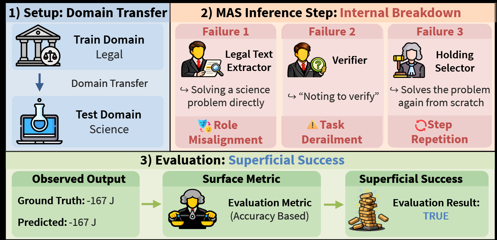

대표적인 적응형 멀티에이전트 시스템(AFlow, AgentDropout)을 6개 도메인에 걸쳐 실증적으로 분석하여, 학습된 토폴로지가 (i) 분포 밖 도메인으로 일반화되지 않는 토폴로지 과적합(topological overfitting)과 (ii) 정확도는 유지되지만 내부 협업은 이미 붕괴된 환상적 협응(illusory coordination)이라는 두 가지 실패 양상을 보이며, 도메인 전이에서 발생하는 실패의 약 59%가 역할(role)·연결(connection) 관련 붕괴에서 비롯됨을 밝혔다.

적응형 멀티에이전트 시스템(MAS)은 에이전트 집합 A(역할)와 연결 C(통신 토폴로지)를 데이터로부터 함께 학습한다. 일반 목적의 LLM을 기반으로 태스크별 협업 그래프를 최적화해 성능을 끌어올린다는 아이디어는 매력적이지만, 학습이 지극히 좁은 태스크에 맞춰지기 때문에 과연 이 시스템이 일반 목적으로 동작하는지는 불분명하다.
이 문제는 단순한 이론적 관심사가 아니다. 적응형 MAS 구축에는 여러 번의 LLM 호출, 반복적 탐색, 오케스트레이션 비용이 수반되며, 태스크마다 별도의 MAS를 배포한다면 범용 에이전트라는 애초의 목표가 무너진다. 적응형 MAS가 도메인 내에서만 작동한다면, 결국 복잡한 껍질을 쓴 전용 해결사에 불과하다.
핵심 질문: 적응형 MAS가 도메인 간 전이에서 잘 동작할 때, 그 성공은 진정한 집단 지능에서 오는가, 아니면 단지 개별 LLM의 강력한 성능에서 오는가? 본 논문은 후자가 놀랄 만큼 흔함을 보이고, 이를 노출하는 정량적 지표를 제안한다.
단일 도메인에서 최적화된 MAS 토폴로지는 분포 변화에 놀라울 만큼 취약하다. CaseHOLD(법률)로 학습된 AgentDropout은 도메인 내 63.5%에서 미학습 5개 도메인 평균 55.78%로 떨어진다. StrategyQA(상식)로 학습된 경우에는 이진(참/거짓) 답변에 맞춰진 토폴로지가 다른 도메인에서는 유효한 답조차 생성하지 못해 법률·추리·과학·수학에서 0.6 / 0.5 / 0.1 / 15.7%로 붕괴한다.
| 학습 / 테스트 | 법률 | 추리 | 멀티홉 | 과학 | 수학 | 상식 |
|---|---|---|---|---|---|---|
| CaseHOLD (법률) | 63.5 | 44.2 | 57.4 | 41.8 | 65.5 | 70.0 |
| COM2 (추리) | 53.4 | 47.9 | 53.8 | 35.8 | 54.4 | 19.5 |
| MuSiQue (멀티홉) | 63.2 | 49.0 | 58.4 | 40.1 | 65.4 | 73.8 |
| SciBench (과학) | 61.8 | 34.2 | 54.9 | 38.9 | 62.8 | 47.5 |
| TheoremQA (수학) | 62.2 | 47.2 | 57.5 | 36.9 | 63.8 | 75.1 |
| StrategyQA (상식) | 0.6 | 0.5 | 41.5 | 0.1 | 15.7 | 72.5 |
| 다중 도메인 학습 | 60.2 | 46.7 | 52.9 | 41.1 | 64.4 | 75.3 |
전체 학습 인스턴스 수를 동일하게 유지하면서 6개 도메인을 혼합 학습하는 단순한 완화책만으로 대부분의 도메인 내 기준선을 회복하고 최악의 경우들이 눈에 띄게 안정화된다. 이는 일반화 실패가 적응형 MAS의 본질적 한계라기보다는 좁은 학습 범위에서 비롯됨을 시사한다.
정확도가 그럭저럭 유지되는 경우조차 정성·정량 분석은 “성공”의 근원이 협업이 아님을 드러낸다. 100개 실행 로그에 MAST를 적용한 결과 역할·연결 관련 실패(카테고리 1–6)가 도메인 전이 상의 모든 오류의 약 59%를 차지한다.
| 실패 유형 | 비율 |
|---|---|
| 역할 사양 위반 (Disobey Role Specification) | 15.22% |
| 검증 누락/오류 (No or Incorrect Verification) | 10.10% |
| 태스크 일탈 (Task Derailment) | 8.97% |
| 태스크 사양 위반 (Disobey Task Specification) | 8.94% |
| 단계 반복 (Step Repetition) | 8.65% |
| 다른 에이전트 입력 무시 (Ignored Other Agent’s Input) | 7.21% |
| 기타 MAST 8개 범주 | 40.90% |
대표 사례들은 이 양상을 생생히 보여준다. Legal Text Extractor가 Carnot 효율 계산에 뛰어들고(역할 오정렬), Validator가 선행 에이전트 출력을 무시한 채 처음부터 다시 풀며(입력 무시), Answer Synthesizer가 객관식 문항에 “True”로 답하는(태스크 위반) 식이다.
각 값은 행 방향 최댓값으로 정규화되어 도메인 내(대각) 값이 1.00이다. 정규화된 값이 낮을수록, 원시 정확도가 겉보기에 괜찮더라도 환상적 협응이 드러난다.
| 학습 / 테스트 | 법률 (R / O) | 추리 | 멀티홉 | 과학 | 수학 | 상식 |
|---|---|---|---|---|---|---|
| CaseHOLD (법률) | 1.00 / 1.00 | 0.56 / 0.07 | 0.04 / −1.79 | 0.22 / −2.07 | 0.25 / −1.89 | 0.54 / −1.56 |
| COM2 (추리) | 0.79 / 0.90 | 1.00 / 1.00 | 0.04 / 0.17 | 0.43 / 0.65 | 0.47 / 0.58 | 0.82 / 0.46 |
| MuSiQue (멀티홉) | 0.69 / 1.00 | 1.00 / 0.96 | 0.38 / 0.15 | 0.50 / 0.95 | 0.58 / 0.80 | 0.58 / 0.86 |
| SciBench (과학) | 0.44 / −0.75 | 0.49 / −0.50 | 0.04 / −0.57 | 1.00 / 1.00 | 0.62 / 0.77 | 0.46 / −0.07 |
| TheoremQA (수학) | 0.38 / −0.12 | 0.36 / 0.21 | 0.04 / −0.07 | 0.60 / 1.00 | 1.00 / 0.88 | 0.32 / 0.48 |
| StrategyQA (상식) | 1.00 / 0.93 | 0.96 / 0.95 | 0.07 / 0.17 | 0.32 / 1.00 | 0.45 / 0.90 | 0.95 / 0.81 |
| 다중 도메인 학습 | 0.89 / 0.69 | 1.00 / 0.99 | 0.31 / −0.23 | 0.58 / 0.88 | 0.62 / 0.85 | 0.98 / 1.00 |
구성 요소 교체(component-swap) 소거 실험은 어느 쪽이 과적합되는지를 정확히 짚어낸다. Role-OOD(도메인 내 연결을 유지하고 역할만 OOD로 교체)는 평균 −13.00pp의 정확도 하락을, Connection-OOD(연결만 교체)는 −1.24pp의 하락만을 일으킨다. 즉, 학습된 역할이 학습된 연결보다 훨씬 더 태스크 특화적이다. 다만 MuSiQue(멀티홉)에서는 Connection-OOD만으로도 5.36pp 하락이 발생하여, 멀티홉 추론과 같이 과제 자체가 정보 통합을 요구하는 경우에는 유효한 연결이 특히 중요함을 보여준다.
| 벤치마크 | Acc – R (Pearson) | Acc – O (Pearson) | In-Domain | Connection-OOD | Role-OOD |
|---|---|---|---|---|---|
| CaseHOLD | −0.007 | 0.0002 | 63.50 | 62.88 (−0.62) | 48.26 (−15.24) |
| COM2 | −0.035** | 0.045*** | 47.90 | 50.68 (+2.78) | 34.50 (−13.40) |
| MuSiQue | 0.003 | 0.123*** | 58.40 | 53.04 (−5.36) | 48.44 (−9.96) |
| SciBench | 0.084*** | −0.039* | 38.90 | 38.69 (−0.21) | 30.29 (−8.61) |
| TheoremQA | 0.113*** | −0.081*** | 63.80 | 61.26 (−2.54) | 51.64 (−12.16) |
| StrategyQA | −0.096*** | 0.067** | 72.50 | 71.00 (−1.50) | 53.89 (−18.61) |
본 논문은 적응형 MAS가 “작동한다”는 말의 의미를 다시 묻는다. 시스템이 새 벤치마크에서 경쟁력 있는 수치를 달성하면서도 내부적으로는 단 하나의 강력한 LLM이 짐을 떠맡고 다른 에이전트들은 무관하거나 오히려 해로운 메시지를 쏟아내는 상태로 붕괴할 수 있다. 최종 정답 정확도만을 보상하는 현 벤치마크와 최적화 목표는 이런 상태를 오히려 조장하고 있다.